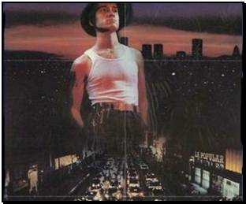
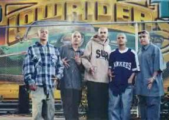
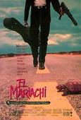
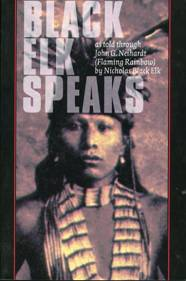
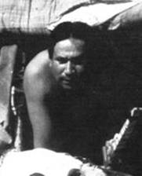
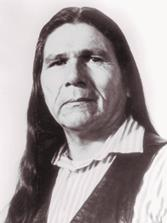

Mi Vida Loca
Life as a Virtual Cholo
If you’re clueless, there’s a glossary at the bottom.

When I was six years
old, I wanted to be an Indian. Never a cowboy. (Well,
maybe a Hell’s Angel or a motorcycle cop.) In high school, I wanted to be a cholo. Hung out
with Chicano friends, wore cholo
clothes as much as I could without looking silly. (I looked silly). Why not
just be myself? I had this sense of being different, and I was looking for something
physical to hang it on. Something that would immediately clue people I’m not like you. In high school, nobody
treated me like I was exotic, dangerous. They treated me like shit, as is fitting and
proper for a science geek who uses big words in casual speech.
I was accepted. I was
kind of like the white Lambda Lambda Lambda fraternity chapter in Revenge of the Nerds. Everyone understood my pain. (There was a
price, spelled out with surprising candor: don’t compete with us for Mexican
women.)
Later I discovered on
the web that many, many Chicanos who feel like wannabe Chicanos. Political
types (e.g. MEChA) have defined the criteria for
being a real Chicano so narrowly that
no one fits. A couple of sites even published checklists. They say I was a real
Chicano and didn’t know it. (Neither list requires actual Mexican
ancestry!) What does it take? Speak Spanish, but not much…check. Be born (this is where most Chicanos fall
down) in a hardcore hood. I was born by the corner of 109th and Centinela, South Central, so suck it up, pochos. I was a blue baby (see below). And most
importantly, I was a real wannabe just like mis carnales.
So. What happened? My run as an O.G. (Original Guëro) ended the day three gabachos beat the
crap out of quiet, innocuous little Roberto L., who was no cholo—he was so far under the badass radar that he didn’t even own footprints. Mis vatos didn’t
invite me along when the administered the traditional barrio payback, and
tossed one of the pendejos
on a fire plug, cracking a vertebra and a couple of ribs. Nobody ever went down for this, the Omerta held. They
shut up the gabacho
with threats of retaliation from primos in

If you don’t read sign language, these
guys are from Florencia
That’s hardcore. Mi barrio VLH wasn’t and still isn’t anywhere near that hard.
In the ensuing race riots, I was
suddenly colorless, no one’s enemy, no one’s friends. Once again, I was that physics geek who
dressed like a Mexican. Still, I had my
uses. A gabacho clique leader asked if I
could synthesize mustard gas so he could put some on his knife. (I do remember his name!)
Full disclosure: I do
remember being a pendejo myself on occasion. There
was this one guy who challenged me who was two steps below me on the fear
hierarchy. I decided to pull his safety
blanket out from under him, so I showed up at his house to fight. His mother
answered the door. “I’m here to beat on
Kevin,” I announced loud enough for Kevin to hear--so he wouldn’t feel safe at
home. “He’s around back,” his mother
said, motioning me in.
By now I was starting
to feel sorry for the guy! Safety blanket, eh? So I went out back and shoved
him around while his mother polished the dining room table with Pledge. I
didn’t hit him since he didn’t resist.
So I made him grovel, declared victory, and—most important--got him to
promise on pain of death that that’s the way he’d tell it at school tomorrow.
It was far from the
worst thing I ever did to an enemy, but let’s change the subject and move on,
shall we?

The main thing I remember about this
period was an addictive mix of desperation, agony and exhilaration. Working in
the school library to avoid enemies on the way home, getting sick on strategic
days. The movie El Mariachi, made for
$8K of blood donor money, best captures the rhythm of pursuit and evasion.
So in college I finally grew up and
became an American Indian wannabe.
If you
didn’t grow up in Los…
Easter Egg: My Career as an Indian

My understanding of Indian culture came
from Black Elk Speaks and the Book of the Hopi. In college there were a few
Indian students. They hung out with the
black crowd and sounded like
Black Elk talked from a genuine
Indian spiritual tradition. I don’t mean chanting and burning sage. He said “He
who sees the morning star shall be wise, for he shall see more”, which means
something if you’re a yogi. I idealized Plains Indian societies into the kind
of utopian warmth I’d experienced on mountain retreats with a small group of
friends.

Heard Leonard Crow Dog (son of a
well-known Lakota shaman) speak while in grad school. A full hour of whining about the evil white man. I wanted to grab him and shake him. Why don’t
you guys quit whining, stop drinking, and see what it would take to rebuild a
spiritually-oriented hunter-gatherer culture? Is it feasible? Do you have enough
space for a bison herd if you pool the reservations? Work it out! See if you
can reclaim the culture you keep lamenting before all memory is lost!

I had a no-bullshit “encounter” with
an Indian leader, too. Dennis Banks, an
AIM leader. During the Pine Ridge civil
war, he occupied a, I think it was a trading post against the tribal goon
squad, with a bunch of white kids helping out. Telling the story, his voice
broke when he got to the part where they actually took him seriously, looked to
him for leadership,.
Politics aside, he won me over personally in that moment.
I didn’t have to be an outsider to
be a retro-Indian. Wearing Indian clothes (and face paint on occasion) made me
a normal hippie. I remember carrying a handmade spear on Amtrak…in case of
ancestral enemies, I told the conductor.
It was the age of identity
politics. I invented my own tribe, the Hiaku (adj.) and the
I posted some of this material on my
dorm room door, and a couple guys down the hall wanted to know where I’d scored
peyote. Oh well. Their kids will love my book.
OK, now you know far more about me
than you should. I’m going to stop right here. That’s all you need to know.